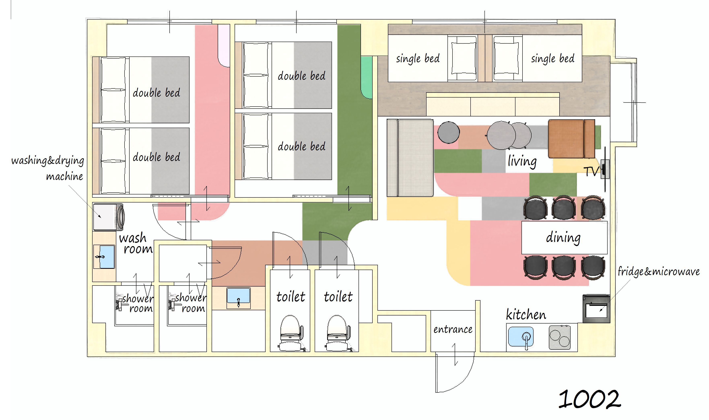
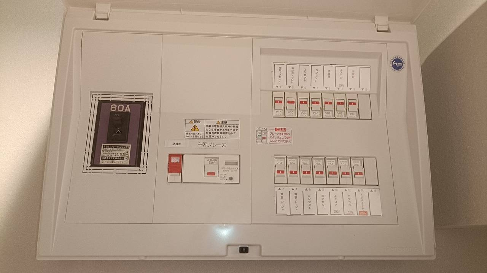

Right wall after entrance
The circuit breaker is on the wall to your right after entering the room.

This is the breaker panel. If the power goes out, check whether a switch has dropped.
How to reset the circuit breaker
Open the panel and flip any tripped switch back up. The breaker is on the right-side wall just after the entrance.